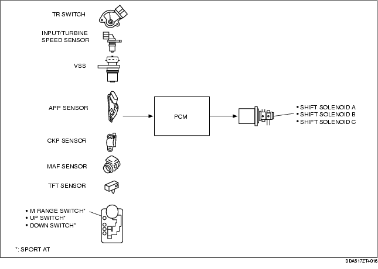

Direct electric shift control outline [FN4A-EL]
• The PCM determines the optimum clutch engagement pressure and drives the duty-cycle shift solenoids based on input signals in accordance with the vehicle driving conditions including the engine torque (calculated from throttle opening angle, vehicle speed, engine speed, gear position, intake air rate, and other operational parameters).
• By driving the duty-cycle solenoid valves, and performing the electronic control of the clutch engagement pressure directly through the PCM, minute hydraulic control, which could not be obtained by the clutch engagement pressure control with the accumulator, is obtained.
Block diagram
